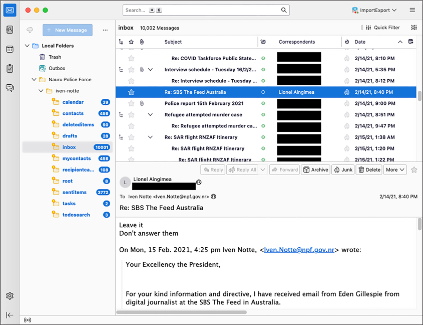
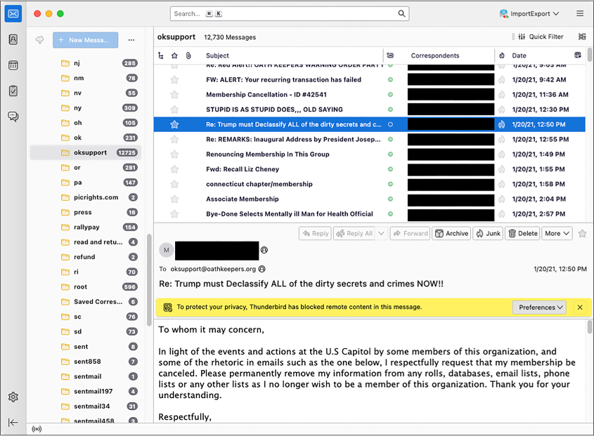
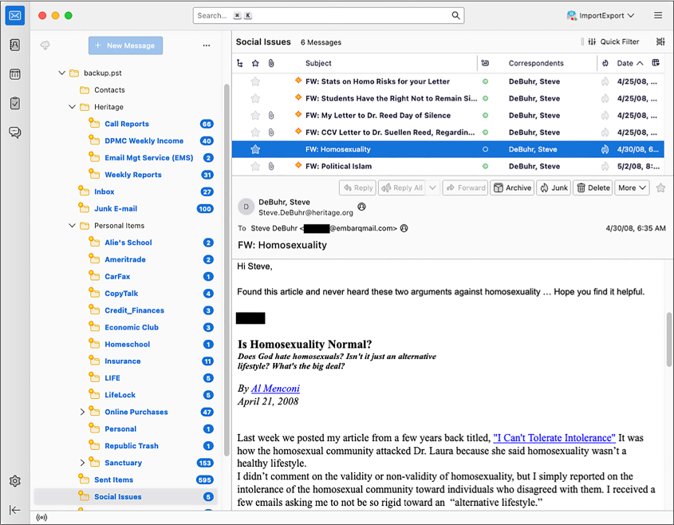
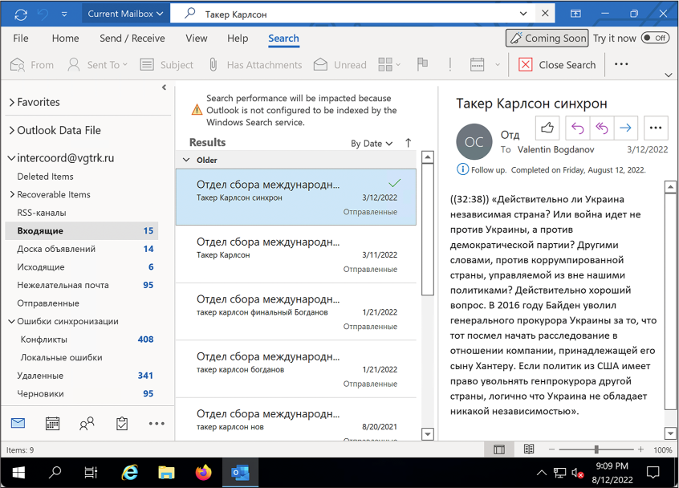

Email leaks are among the most common types of data leaks, and they can have serious consequences. In the 2016 US presidential election between Hillary Clinton and Donald Trump, leaked email messages from the DNC and Clinton campaign chair John Podesta—both hacked by the Russian government—played a major role in Trump’s election. The 2020 US presidential election between Trump and Joe Biden also involved email leaks—in this case, stolen from the laptop of Biden’s son Hunter.
With so many messages to sort through in email leaks, though, finding a place to start can be overwhelming. Depending on how the email was obtained and what software was running on the hacked server, the leaked data could be in any of several different formats, and it may not be clear how to access the messages it contains.
In this chapter, you’ll learn about common formats for leaked email, the benefits and shortcomings of indexing and searching email with Aleph, and how to import email datasets into Thunderbird and Microsoft Outlook. You’ll sift through leaked email from the Oath Keepers dataset you downloaded in Chapter 4, in addition to datasets from Australian offshore detention centers and the conservative US think tank the Heritage Foundation. We’ll begin by taking a look at the standard composition of an email message.
The Email Protocol and Message Structure¶
A protocol is a shared language that software developers agree upon to make their code interoperate. The email protocol we use today was first implemented in the early 1980s, got a major revamp in 1995, and hasn’t changed much since. Unlike modern centralized messaging systems (Facebook Messenger, for example), this protocol allows anyone to run an email server with their own software. For example, Google runs a server at gmail.com, the Russian search engine Yandex runs one at mail.yandex.com, and the Swiss company Proton runs one at proton.me. These servers are powered by different software but communicate using the same protocol, meaning they can all send messages to one another. Internet standards, specifications for how certain types of software should behave, ensure that all email software communicates with a shared protocol and a shared message format.
Because the email message format is an internet standard, all messages
have a similar structure. To see what this format looks like, open any
email and choose Show Original or View Source. Each message is a
text file with two sections: the headers and body. The headers contain
an email’s metadata in Header-Field: Value format, while the body
contains the main text of the message.
The following headers are included in nearly every email message:
Subject: What's up?
From: Alice <alice@example.com>
To: Bob <bob@example.com>
There are many more headers than these; your email software shows only a
few of them. When email servers send, forward, or receive messages, they
add headers describing these actions. For example, the common header
DKIM-Signature allows you to
verify, using cryptography, that an email actually came from the server
that it claims sent it. Messages also typically include a
Content-Type header, which
describes the format of the body text.
After the headers, the email includes a blank line followed by the body. The body is typically in plaintext (text with no formatting), HTML, or Multipurpose Internet Mail Extensions (MIME) format. In MIME email, the most common format, the body is split into parts for text, HTML components, and email attachments.
Though email messages are text files, you can send binary files like PNGs or ZIPs as attachments. Your email client converts the binary file into text using Base64 encoding and includes that encoded attachment in the message. Just as you can convert any decimal number (that is, one conveyed using 10 digits) into a binary number (conveyed using 2 digits) and back, you can convert any binary data into Base64 data (conveyed using 64 characters). For example, here’s how a PNG image containing a 1×1 transparent pixel looks with each of its 86 bytes of data represented as binary digits:
10001001 01010000 01001110 01000111 00001101 00001010 00011010 00001010 00000000 00000000
00000000 00001101 01001001 01001000 01000100 01010010 00000000 00000000 00000000 00000001
00000000 00000000 00000000 00000001 00001000 00000110 00000000 00000000 00000000 00011111
00010101 11000100 10001001 00000000 00000000 00000000 00000110 01100010 01001011 01000111
01000100 00000000 11111111 00000000 11111111 00000000 11111111 10100000 10111101 10100111
10010011 00000000 00000000 00000000 00001011 01001001 01000100 01000001 01010100 00001000
11010111 01100011 01100000 00000000 00000010 00000000 00000000 00000101 00000000 00000001
11100010 00100110 00000101 10011011 00000000 00000000 00000000 00000000 01001001 01000101
01001110 01000100 10101110 01000010 01100000 10000010
And here’s the Base64-encoded version of the same binary file:
iVBORw0KGgoAAAANSUhEUgAAAAEAAAABCAYAAAAfFcSJAAAABmJLR0QA/wD/AP+gvaeTAAAAC0lE
QVQI12NgAAIAAAUAAeImBZsAAAAASUVORK5CYII=
Base64-encoded data looks like a block of seemingly random text that
includes capital letters, lowercase letters, numbers, plus signs
(+), and forward slashes
(/), and sometimes ends with
equal signs (=). The
Base64-encoded version of some data conveys the same information as the
decoded version, but it can be included more compactly in a text file,
like an email. When the recipient of the email loads it, their email
client will convert it from Base64 text back into a binary file.
Sometimes plaintext or HTML email is encoded in Base64 as well (for
example, hello world is
aGVsbG8gd29ybGQ= in Base64).
Although email messages are text files, you can’t rely on grep to search them, because much of the
content you’re hunting for might be Base64-encoded.
Keeping in mind those basics, let’s turn now to the specific formats typically encountered in email leaks.
File Formats for Email Dumps¶
The most common file formats for email dumps, or collections of email messages, are EML files, MBOX files, and PST Outlook data files. You’ll download email in each format in the upcoming exercise.
EML Files¶
The simplest type of email dump is a folder full of EML files, the standard email message format. An EML file is a text file with the extension .eml that contains the raw email message—the headers followed by the body.
When you download an email from your personal account, it will be in EML format. If you have a Gmail account, for example, open a message, click the More menu (the three dots icon) in the upper-right corner, and choose Download Message. Other email clients should likewise allow you to download individual messages in EML format. You can sometimes read an EML file in a text editor, but you’ll frequently be stymied by the Base64-encoded parts, so it’s more useful to open it in an email program like Thunderbird, Outlook, or the Mail app on macOS.
You can forward an email inline or as an attachment. Most email systems default to forwarding inline, copying the text of the body of the email you’re forwarding into the body of the email you’re writing. When you instead forward as an attachment, you attach the raw EML file to the email you’re writing. From a Gmail inbox, for example, select the box next to an email message, click the More menu, and choose Forward as Attachment. Other email clients should allow you to forward email as attachments as well. EML files include information that isn’t included in inline forwarded email, such as the original email headers.
EML files don’t include information on how the email was organized in the user’s inbox, such as the folder where the email was stored. For this reason, people who leak email dumps in EML format often organize the files into folders, with each folder representing a different user’s inbox. Sometimes they organize the files from each inbox into subfolders, too.
In Exercise 6-1, you’ll download email messages in EML format from the Nauru Police Force dataset.
MBOX Files¶
In an MBOX email dump, each file is a collection of many email messages, generally representing a full folder of email. MBOX files often have the file extension .mbox, but sometimes they have no file extension at all.
Like EML files, MBOX files are text files that are viewable in a text editor but not very human-readable because of the Base64 encoding. However, you can’t just open an MBOX file in an email client to read the email like you can with an EML file. Instead, you’ll need to import the file.
The Oath Keepers dataset is a series of MBOX files, one for each hacked inbox. I’ll give more detail on the structure of this dataset in Exercise 6-1.
PST Outlook Data Files¶
Email dumps may also come in the form of PST files, a proprietary format that represents a Microsoft Outlook inbox with the .pst file extension. Microsoft’s email server is called Microsoft Exchange. Whenever an Outlook user wants to create a backup of their email, or when an Exchange server is hacked, the data is downloaded in PST format.
A PST file represents a full email inbox, complete with a hierarchy of folders and their contents. These files can get big. For example, in April 2022, hackers made off with 786GB of data from the All-Russia State Television and Broadcasting Company (VGTRK), the largest state-owned media company in Russia, and leaked it to DDoSecrets. This dataset includes 252 PST files, each representing a different email address. One file, intercoord@vgtrk.ru.pst, is 48GB alone.
In Exercise 6-1 you’ll download a 1GB PST file containing email from the Heritage Foundation.
Exercise 6-1: Download Email Dumps from Three Datasets¶
In this exercise, you’ll work with three different datasets from the Nauru Police Force, the Oath Keepers, and the Heritage Foundation. You should already have the Oath Keepers dataset from Chapter 4, so you’ll download the other two next. You’ll also learn more about their contents and structure.
The Nauru Police Force Dataset¶
Nauru is a tiny island in the Pacific with a population of about 10,000. While technically it’s an independent country, it hosts abuse-ridden offshore detention centers that the Australian government uses to hold immigrants and asylum seekers. The Nauru Police Force dataset (https://ddosecrets.com/wiki/Nauru_Police_Force) is a 54GB torrent full of 127 ZIP files, each a copy of all of the email from a specific email address at npf.gov.nr, the domain for the Nauru Police Force. Inside each ZIP file is a collection of folders containing EML files. This dataset contains over 285,000 messages.
For this chapter, you’ll be working with the file iven-notte.zip, which is about 2.9GB. Download the file directly from https://data.ddosecrets.com/Nauru%20Police%20Force/npf.gov.nr/iven-notte.zip. Once you’ve done so, save it into a folder called Nauru Police Force on your datasets USB disk and unzip it. You should end up with a folder called iven-notte containing the subfolders calendar, contacts, deleteditems, drafts, inbox, and more. Each of these subfolders is full of EML files.
The Oath Keepers Dataset¶
The public part of the Oath Keepers dataset is a 3.9GB torrent of MBOX files taken from the server that hosted email for the oathkeepers.org domain. This dataset has a folder called Oath Keepers.sbd, containing subfolders called ak, al, alb, ar, Archive, az, and many others, each of which is an MBOX file (without the .mbox file extension) that contains several email messages. Each US state chapter of the Oath Keepers militia has its own inbox, so, for example, you can find the Arizona chapter’s email in the MBOX file az. There are a few other MBOX files, including volunteers and stewart.rhodes (Stewart Rhodes is the founder of the militia and was convicted of seditious conspiracy and sentenced to 18 years in prison for his group’s role in the January 6, 2021, attack on the US Capitol). DDoSecrets distributes an additional part of the dataset, which contains donor and membership records, only to journalists and researchers who request access, because it contains so much PII.
If you didn’t already download the Oath Keepers dataset in Chapter 4, visit the DDoSecrets page for the Oath Keepers at https://ddosecrets.com/wiki/Oath_Keepers. This page includes a link to the torrent file as well as the magnet link. Add the torrent to your BitTorrent client and download the full dataset, saving it to your datasets USB disk.
The Heritage Foundation Dataset¶
The Heritage Foundation is a conservative think tank that played a major role in US politics during the Reagan administration. This dataset, a 1GB file called backup.pst, is a backup of a personal email account used by an employee on the foundation’s major gifts team. His email address was hosted with his residential ISP at the domain embarqmail.com. In 2015, the Twitter user @jfuller290 noticed that the foundation had accidentally put this backup in PST format on a public Amazon S3 bucket—an Amazon cloud service that hosts files—and he tweeted the link to it. (The Heritage Foundation at first claimed that it was hacked, but in fact it had inadvertently made the file public itself.) The email backup was made in 2009, six years before @jfuller290 noticed it.
Visit the DDoSecrets page for the Heritage Foundation at https://ddosecrets.com/wiki/Heritage_Foundation. This page includes links to the torrent as well as a direct download for this dataset. Because the dataset is just a single, relatively small Outlook Data File, directly download it from https://data.ddosecrets.com/Heritage%20Foundation/backup.pst and save it into a folder called Heritage Foundation on your datasets USB disk.
While you’re waiting for these email dumps to finish downloading, read on to learn about the tools you can use to research them.
Researching Email Dumps with Thunderbird¶
Before you start reading the email you’ve downloaded, you’ll install and configure Thunderbird, an open source email program for Windows, macOS, and Linux that allows you to work with email dumps in different formats. You can use Thunderbird to import folders full of EML or MBOX files and search and read everything inside them. When you open an EML file in Thunderbird, the program will parse the file, Base64-decode everything for you, and let you see HTML email and download attachments.
Thunderbird users typically use the program just to check their personal email, sometimes for multiple email accounts. If you want, you can add your existing email accounts to it and use it to read and write email yourself. For research purposes, though, you’ll use Thunderbird to import email into local folders, which will allow you to work with the email locally on your computer without connecting to an email server. You don’t need internet access when using Thunderbird to research email dumps in this way, which means you can use an air-gapped computer.
Like its sister project, the Firefox web browser, Thunderbird supports
third-party extensions that add functionality to the program. The
ImportExportTools NG extension is crucial to working with email dumps;
it adds support for importing MBOX files and for bulk-importing folders
full of EML files, keeping their folder structure intact. However, to
import PSTs into Thunderbird, you must first convert them into EMLs
using the readpst program.
You’ll import all three file types into Thunderbird later in the
chapter.
After importing email dumps into Thunderbird, you can click through all of the folders and read the email messages as if you were reading your own email. You can also use Thunderbird’s built-in search feature to bulk-search all of the email you’ve imported. However, you can’t use Thunderbird to search the content of attachments—for that, you’ll need a tool like Aleph, which we’ll discuss in Other Tools for Researching Email Dumps on page 163.
Exercise 6-2: Configure Thunderbird for Email Dumps¶
In this exercise, you’ll install Thunderbird and configure it in order to analyze the three email dumps you’ve downloaded.
Download Thunderbird from https://www.thunderbird.net and install it on your computer. When you open the program the first time, it asks if you want to set up an existing email account. While you won’t need to use a real email account to research email dumps, adding an account to Thunderbird makes it easier to import these data dumps later on. If you don’t want to use Thunderbird to check your real email, I recommend that you create a new email account just for this purpose. Click the Get a New Email Address link to create a new free email account directly within Thunderbird on an email provider called Mailfence. Select an email address and generate a random password in your password manager, then provide an existing email address to activate your new account. After creating your account, log in to it with Thunderbird, and you should see the message “Account successfully created.”
Next, switch to the main Thunderbird tab. In the Folders sidebar on the left, you should see the email address you added, and beneath it a section called Local Folders. You added an email address just to create the Local Folders section, so if you don’t plan on using Thunderbird to check this email account, you can delete it. To do so, click the Thunderbird menu icon in the top-right corner and choose Account Settings. Make sure your new email account is selected, click Account Actions in the bottom left, and choose Remove Account. Select the Remove Message Data box and click Remove. Now switch back to the main Thunderbird window, and only Local Folders should remain in the left sidebar.
Next, to install the ImportExportTools NG Thunderbird add-on, click the menu icon in the top-right corner and choose Add-ons and Themes. Switch to the Extensions tab, search for ImportExportTools NG, and install the add-on. A lot of this add-on’s functionality appears in the Tools menu bar at the top, which appears automatically in macOS. To access it in Windows or Linux, click the menu icon in the top-right corner and choose View ▸ Toolbars ▸ Menu Bar. A menu bar should appear at the top of the Thunderbird window. Go to Tools ▸ ImportExportTools NG to access the add-on’s features.
Finally, click the Thunderbird menu icon and choose Settings. Switch to the Privacy & Security tab and make sure that Allow Remote Content in Messages is unchecked (it should be unchecked by default). Remote content is any content hosted on the internet instead of inside of the email, like images loaded from URLs. When you open an email with remote content, like an HTML email with images, loading those images will leave a trace that the email was opened from a certain IP address.
NOTE Thunderbird will always give you the chance to load remote content on individual email messages if you’d like, but I recommend that you connect to a VPN beforehand so that the VPN’s IP address, rather than your IP address, will be tracked (see the “Covering Your Tracks with a VPN Service” box on page 255).
Reading Individual EML Files with Thunderbird¶
During your own investigations, you may find only a few EML files in a dataset, or someone might forward email messages to you as attachments. Thunderbird is a good tool for inspecting these messages individually without needing to import them.
Once your downloads from Exercise 6-1 have finished, try using Thunderbird to view some individual messages. Open your file manager app, like Explorer in Windows or Finder in macOS, and browse to the extracted iven-notte folder in the Nauru Police Force dataset. Open the inbox folder, right-click one of the EML files, and open it in Thunderbird. Thunderbird should show you the headers, like the date the email was sent, and the From, To, and Subject lines. You can also read the email exactly as it was originally formatted, and if it has attachments, you can open them.
Just as you shouldn’t blindly open attachments you receive in your personal email, don’t blindly open attachments that you find in email dumps, because they could hack your computer. Refer back to Chapter 1 for tips on how to open such documents safely.
EXTRACTING ATTACHMENTS FROM EML FILES¶
A single EML file could contain several file attachments, all Base64-encoded. The
munpackprogram lets you extract these attachments without needing to use an email client. Installmunpackwithsudo apt install mpackin Linux or Windows with WSL, or usebrew install mpackin Homebrew on macOS. You can then run the commandmunpack filename.emlto extract the attachments from an email.For example, the Nauru Police Force dataset contains an EML file called
68.eml. When I runmunpack 68.eml, it extracts the attachments from that email—in this case,RegistrationXForm.pdfandCOPXPassport.pdf—into the current working folder. You could also usemunpackin a script to extract all of the attachments from every email message in an email dump, all from the terminal.
In the following exercises, you’ll import each of the email dumps you just downloaded into Thunderbird, starting with the EML files from the Nauru Police Force dataset.
Exercise 6-3: Import the Nauru Police Force EML Email Dump¶
To import an email dump with the ImportExportTools NG add-on, select the folder into which you’d like to import it. Always import email dumps into a local folder, rather than a remote folder on an email server. From the Folders sidebar on the main Thunderbird tab, right-click Local Folders and choose New Folder, as shown in Figure 6-1.

Figure 6-1: Creating a new local folder in Thunderbird
Name your folder Nauru Police Force and click Create Folder. You should now see the Nauru Police Force folder in your Local Folders list.
Right-click the Nauru Police Force folder you just created and choose New Subfolder. Name your subfolder iven-notte, the name of the email account whose inbox data you’ll be importing, and click Create Folder. Right-click the new iven-notte subfolder that you just created and choose ImportExportTools NG ▸ Import EML Messages ▸ All EML Messages from a Directory and Subdirectories. A dialog will pop up, allowing you to browse for a folder. Select your iven-notte subfolder.
This subfolder should immediately start filling up with the 14,964 email messages that you’re importing. It will probably take a few minutes to finish (importing all 127 inboxes in this dataset would take considerably longer).
Figure 6-2 shows Thunderbird with the iven-notte inbox loaded up. You can see all of the folders and the number of unread messages in each. (If you’d like, you can mark all of these messages as unread to keep track of which messages you have left to read.)

Figure 6-2: An email dump imported in Thunderbird
The email selected in Figure 6-2 is in the inbox folder and was sent from Lionel Aingimea, the president of Nauru at that time. In the email, he instructs Iven Notte, the Nauru police chief and the inbox owner, to not respond to Australian journalist Eden Gillespie, who had asked about two Nauru men who had allegedly attacked a refugee worker, possibly run him over, and stolen his motorbike. “Leave it,” President Aingimea wrote. “Don’t answer them.”
Cam Wilson, a reporter for the Australian news site Crikey, dug into the Nauru Police Force dataset and revealed “the appalling disregard for refugees and asylum seekers detained there.” You can read Wilson’s reporting on Crikey’s website, https://www.crikey.com.au.
Searching Email in Thunderbird¶
Now that you’ve got Thunderbird configured and loaded with data, you’re ready to explore that data. For example, you may want to search the Nauru Police Force dataset for other email from President Aingimea or from Australian politicians. You could also search for email that contains keywords like refugee or was written on specific days. This section covers search methods you can use on any email dump you import into Thunderbird.
Quick Filter Searches¶
The simplest search option is to filter the email that shows up in the currently selected folder. When viewing a folder, near the top of the Thunderbird window, make sure the Quick Filter button is toggled on so that an extra toolbar appears. This toolbar has buttons to quickly filter out only messages that are unread, contain attachments, or have other properties.
The Quick Filter toolbar also has a search box that you can use to find only messages that include certain text. You can also filter for messages that include the search term in the sender field, recipient field, subject line, or body. This is the most common way I search in Thunderbird. For example, I entered Aingimea in the Quick Filter search box to quickly find all of the email related to President Aingimea in the inbox folder. I could also put his email address in the search box and filter for messages where he’s the sender or the recipient (though he won’t be the recipient of any of this email, because this is Iven Notte’s inbox, not his).
The Search Messages Dialog¶
The Quick Filter search is essentially a more limited version of the Search Messages dialog, which is the most powerful way to search for email in Thunderbird. Open this dialog by clicking the Edit menu and choosing Find ▸ Search Messages. You can choose which folder to search, or you can elect to search all the email in an account at once. You can then choose more granular search queries. For example, you could find all email messages that mention asylum in the body. You can then filter those results by adding further criteria, such as showing only email sent from or to a specific email address or only email with attachments.
There’s also a search box in the top right of the Thunderbird window, above the Quick Filter search box, that will quickly search the full email account. I find this feature less useful than the Search Messages dialog. If I can’t find what I’m looking for with Quick Filter, I move on to Search Messages, which lets me make my searches as granular as necessary.
Exercise 6-4: Import the Oath Keepers MBOX Email Dump¶
In this exercise, you’ll import email from the Oath Keepers dataset into Thunderbird. The Oath Keepers dataset contains the files messages.json and messages_old.json, which are chat logs, and the Oath Keepers.sbd folder, which contains 100 files in MBOX format. You’ll focus on the latter here. As mentioned previously, you can’t open MBOX files in an email client to read the messages like you can with EML files; you must import them into Thunderbird first.
To keep your different datasets separate in Thunderbird, you’ll create a new folder for the Oath Keepers data. In the left panel, right-click Local Folders and choose New Folder. Name your folder Oath Keepers and click Create Folder. You should now see the Oath Keepers folder in your Local Folders list. Right-click the Oath Keepers folder you just created and choose ImportExportTools NG ▸ Import mbox Files ▸ All mbox Files from directory (with sbd structure). Browse your filesystem and select the Oath Keepers.sbd folder.
Thunderbird might become unresponsive while it imports the 3.9GB of email, not allowing you to click on anything, but be patient. When the import is complete, you should have 100 separate folders full of email.
The Oath Keepers folder with the most email, by far, is oksupport, the Oath Keepers support email account. Figure 6-3 shows an email in this folder from a member renouncing his membership shortly after the January 6 attack.
I haven’t found many major revelations in this email dump; most of those are contained in the private part of the Oath Keepers database, the membership and donor lists that DDoSecrets distributes only to journalists and researchers. The publicly available email contains many people writing about joining the militia or complaining that they paid their membership dues but haven’t had any further communication. There’s also a massive amount of spam, including right-wing extremist, conspiratorial, and anti-vaccine bulk email. Look through the various email accounts you imported and try out Thunderbird’s search tools to see if you can find anything interesting I missed.

Figure 6-3: An email from the Oath Keepers email dump
Exercise 6-5: Import the Heritage Foundation PST Email Dump¶
In this exercise, you’ll import the Heritage Foundation email dump, a Microsoft Outlook PST file called backup.pst, into Thunderbird. Since the ImportExportTools NG add-on doesn’t support PST files, first you’ll need to convert the PST into an EML or MBOX file.
The readpst program can
convert a PST file into several different formats, including EML and
MBOX files. You can access the program by installing the
libpst package in macOS or
the pst-utils package in
Ubuntu. Start by opening a terminal. Mac users, run the following
command:
brew install libpst
Linux and Windows with WSL users, run these commands:
sudo apt update
sudo apt install pst-utils
Next, change to the folder that contains the backup.pst file. For example, on my macOS computer, I run:
cd /Volumes/datasets/Heritage\ Foundation
To convert a PST file into EML file, you use the following command,
where the -e argument tells
readpst to output as EML
files:
readpst -e filename.pst
Run that command on the backup.pst file like so:
readpst -e backup.pst
This command creates a folder called Personal Folders, which contains additional Contacts, Heritage, Inbox, Junk E-mail, and other subfolders (this is how the email in backup.pst is organized). Within each folder are several EML files, one for each email message.
NOTE I’ve found it easier to import EML files generated by readpst into Thunderbird, but you can
also convert PSTs into MBOX files with the readpst -r filename.pst command.
In the left panel, right-click Local Folders and choose New Folder, as you did in the previous exercises. Name your folder Heritage Foundation and click Create Folder. You should now see the Heritage Foundation folder in your Local Folders list.
Right-click the Heritage Foundation folder, choose New Subfolder,
and name your new subfolder backup.pst. Right-click the backup.pst
subfolder and choose ImportExportTools NG ▸ Import EML
Messages ▸ All EML Messages from a Directory and
Subdirectories. Browse for the Personal Folders folder that you just
created using readpst and
start the import. This folder should start filling up with over a
thousand email messages.
These email messages, all belonging to former Heritage Foundation fundraiser Steve DeBuhr, are meticulously organized into folders. In addition to Heritage Foundation work, this email dump also includes DeBuhr’s personal email. This email dump is very old—the latest messages are from 2009—so it’s unlikely you’ll find very many revelations in here. Since DeBuhr worked with major donors, though, the email in the Heritage folder contains many attachments full of financial details. Figure 6-4 shows this email dump in Thunderbird.
Particularly, I noticed as I browsed through this email that the Social Issues folder contains homophobic and otherwise bigoted messages that DeBuhr had forwarded from his official heritage.org address account to his personal one.

Figure 6-4: A Heritage Foundation email in Thunderbird
Other Tools for Researching Email Dumps¶
This chapter has focused on using Thunderbird as a tool for researching email dumps, but in your future work, you might find two alternative tools helpful: Microsoft Outlook and Aleph. In this section I’ll go over how you can use each tool to import and search email dumps. You don’t need to follow the instructions in this section to work through the rest of the book, but reading along will give you a sense of what the options are and when to use them.
Microsoft Outlook¶
Unlike Thunderbird, Microsoft’s desktop email program, Outlook, supports importing email dumps directly in PST format. However, Outlook has some downsides. First, it’s not free; the cheapest way to get Outlook is to buy a Microsoft 365 license, which, at the time of writing, costs around $7 per month or $70 per year. Second, Outlook is available only for Windows and macOS, not Linux (though Linux users can run Outlook in a Windows VM). Still, you might find Outlook useful if you’re familiar with the program and understand its advanced features, or just want to see an email in its original interface.
Let’s look at how to import PST files directly into Outlook, using a real example from a hacked Russian email dump. First, set up a Windows VM for Outlook. Do this even if you’re a Windows or macOS user who already uses Outlook for email, in order to avoid mixing up your actual email and a leaked email dump. Microsoft publishes free Windows VM images for several different VM programs like VirtualBox, VMWare, and Parallels. Download the VM image at https://developer.microsoft.com/en-us/windows/downloads/virtual-machines/ and import it into your VM software. You’ll also need to install Microsoft Office in your VM. If you have a Microsoft 365 license, download Office from https://www.office.com by logging in and clicking the Install Office link. If you don’t have a license, Microsoft offers a free trial.
When you open Outlook the first time, it prompts you to log in to your Office 365 account to check your license. After that, it prompts you to set up an email account. At the bottom, click the link Create an Outlook.com Email Address to Get Started in order to create a new account. Make sure to save your email and password in your password manager. Once you’re finished, click Done. Outlook should open with the empty inbox of the new email account you just created.
With Outlook set up, add the PST email dumps to it. Click File ▸ Account Settings ▸ Account Settings, then click Data Files ▸ Add and browse for the PST file you want to add. If you have the disk space to spare, make a copy of the PST file and add the copy instead. All information about this inbox, including details like which messages are marked read, is stored in this file, so working from a copy will prevent you from modifying the original.
The PST file you added should appear in the left sidebar. You can now sift through this inbox as if it were your own. Even the unread email counts you’ll see are the actual counts of unread email for each folder at the time the PST file was exported.
As an example, I set up a Windows VM, installed Outlook, logged in to it using my Microsoft 365 account, and added intercoord@vgtrk.ru.pst (the 48GB PST file hacked from VGTRK mentioned earlier in this chapter).
Figure 6-5 shows this VGTRK inbox, where I’ve used Outlook’s search feature to search for Такер Карлсон. This is the Cyrillic spelling of Tucker Carlson, the former Fox News host.
The subject line of the selected email in Figure 6-5 translates roughly to “Tucker Carlson sync.” The email body contains a translated quote in which Carlson claims that Ukraine is not an independent country, but rather is controlled by the US Democratic Party. The quote also includes the false claim that in 2016, then Vice President Joe Biden fired Ukraine’s attorney general for investigating Biden’s son Hunter. (In fact, Biden leveraged $1 billion in US aid to persuade Ukraine to oust its top prosecutor, Viktor Shokin, who refused to investigate corruption from powerful Ukrainians. Biden worked in tandem with anti-corruption efforts across Europe: European leaders, as well as civil society groups within Ukraine, urged Shokin to resign for the same reason.) Russian TV likely aired this Tucker Carlson clip, and this email was likely the translation for their Russian dubbed version.
{#fig6-5 .img100}
NOTE When working with data dumps in foreign languages that you don’t read, you can rely on machine translation tools like DeepL or Google Translate—assuming, of course, that you’re comfortable sharing the contents of the leak with a third-party service. I’ve also found the Google Translate phone app useful: if you hold your phone’s camera up to your screen, it will translate text in real time. This works even with scanned documents that aren’t OCR’d.
Aleph¶
As you learned in Chapter 5, you can use Aleph to index and browse a wide variety of email, including PST or EML files. When you index a folder containing PSTs, Aleph recognizes the file format and indexes all of the individual messages inside of each PST file, keeping the folder hierarchy intact. Aleph also has the following benefits for working with email dumps:
- Unlike Thunderbird and Outlook, Aleph will also index, make searchable, and even add OCR to email attachments.
- As with any dataset it processes, Aleph will automatically list all of the people and organizations it finds in the dataset, and you can use it to cross-reference that data with other datasets you’ve indexed.
- If you run an Aleph server for a group of researchers, you can easily enable them to search email dumps; all they need is a web browser and an Aleph account.
Using Aleph for email dumps has a few downsides. First, it requires a lot of technical work to spin up an Aleph server and to index datasets, especially if you plan on putting it on the internet for others to use. In my experience, if you try to import large datasets like email dumps into Aleph, you’re likely to run into technical hurdles with your Docker setup. Using Thunderbird is a simpler solution.
Aleph also can’t properly index MBOX files; it tries to index them as
text files rather than as collections of different email messages. It
won’t do any Base64-decoding of the data inside MBOX files, so it’s not
much more useful than grep
for this task. If you want an MBOX-formatted email dump indexed in your
Aleph server, import it into Thunderbird and then export it again (using
ImportExportTools NG) in EML format.
Aleph has other quirks that make working with email dumps more complicated. For example, if there’s an email attachment in a format Aleph doesn’t understand, it just won’t display the attachment at all when you view that email message. If you want to be sure you’re seeing everything in the email, download an individual EML file from Aleph and open it in Thunderbird.
In sum, Outlook is a reasonable choice for PST files, and Aleph is a good choice if you’re working with groups of people or want to cross-reference an email dump with other datasets. However, Thunderbird is the simplest way to quickly start your email dump investigation, and it supports all email formats.
Summary¶
In this chapter, you learned how to import email dumps in the EML, MBOX, and PST formats into Thunderbird to read and search them. You read an email from the president of Nauru, got insights into the type of email the Oath Keepers receive, and explored an old email dump from the Heritage Foundation. You also saw how to use Microsoft Outlook and Aleph as alternatives to Thunderbird. You can use the skills you’ve learned here in your future email dump investigations.
In the next chapter, you’ll level up your technical skills for analyzing datasets by taking a crash course in Python programming.